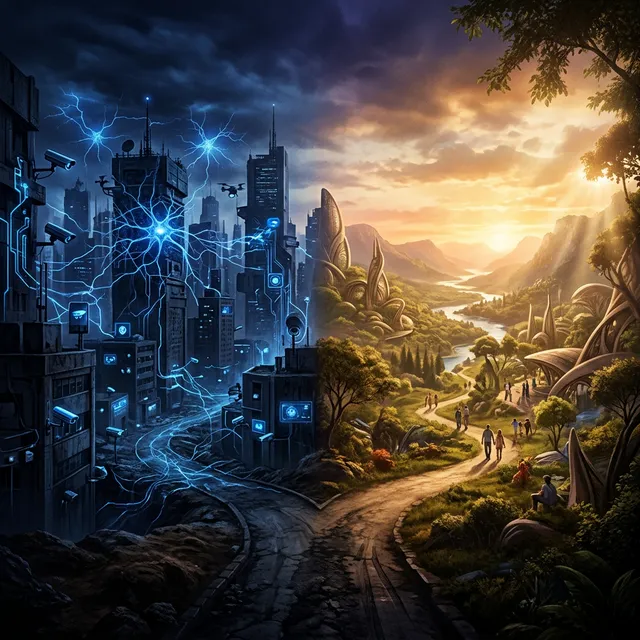

Je partage avec vous aujourd'hui le premier volet d'un de mes écrits, issu de mes analyses de la situation actuelle vis-à-vis de l'intelligence artificielle et de notre avenir. Maintes fois remanié, à mesure que je réalise et m'informe sur les innovations qui s'enchaînent sans cesse, à en perdre le fil malgré une veille, certes encore non experte, mais plutôt soutenue.
Provocation, théâtre ou réalité ? Science-fiction ou révolution scientifique et technologique démesurée à l'échelle de notre histoire et de notre évolution ? Je vous laisse en juger…
L'éveil de l'intelligence non-biologique (2022–2026)
Une nuit à nulle autre pareille
Les grandes extinctions de l'histoire de la vie se sont produites en quelques millénaires. La nôtre risque de se jouer en quelques années…
Réflexion sur l'accélération technologique. Il était environ 23 heures, le 30 novembre 2022. Dans des milliers d'appartements, de bureaux et de chambres d'étudiants à travers le monde, des gens tapaient distraitement sur leur clavier. Certains cherchaient une recette. D'autres rédigeaient un rapport en retard. D'autres encore luttaient contre l'insomnie. Quelque part dans les serveurs d'une startup de San Francisco, un interrupteur fut activé. On appela cela, pudiquement, un « lancement ». On aurait pu l'appeler un éveil. Avant cette nuit-là, l'intelligence artificielle était un sujet pour les laboratoires de recherche, les films de science-fiction et les conférences de spécialistes. Elle recommandait des films sur Netflix, filtrait les spams, reconnaissait les visages sur vos photos de vacances. Utile. Discrète. Domestiquée.
Après cette nuit-là, plus rien ne fut tout à fait pareil.
ChatGPT dépassa le million d'utilisateurs en 5 jours. Il lui fallut 19 jours pour en atteindre dix millions. Instagram avait mis 2 ans 1/2 pour parcourir le même chemin. La télévision avait attendu 13 ans pour convaincre cinquante millions d'Américains.
Nous n'avions jamais rien vu de tel, ni la radio, ni l'imprimerie, ni la roue… une technologie s'installer aussi vite dans les habitudes humaines.
Cet essai littéraire, social, scientifique et d'autres approches encore, en 5 parties commence ici, dans son histoire contée, réelle à mon sens, alimentée par de nombreuses lectures et recherches dernièrement, cette nuit du 30 novembre 2022. Ce jour, non parce que tout a commencé là, car les racines plongent bien plus loin, dans les travaux de Turing, dans les premières thèses sur les réseaux de neurones, dans des décennies de recherches discrètes, mais parce que c'est là que le monde a senti quelque chose basculer. Quelque chose d'irréversible.
Pour comprendre la rupture, il faut d'abord comprendre ce qu'était l'informatique avant. Et ce qu'elle était, fondamentalement, c'était une extraordinaire machine à obéir. Les ordinateurs, depuis les premiers ENIAC dans les années 1940, jusqu'aux smartphones de 2021, fonctionnaient sur un principe simple et immuable :
entrée > traitement > sortie.
On leur donnait des instructions précises. Ils les exécutaient, sans faillir, sans se fatiguer, sans jamais dévier d'un millimètre. C'était leur force. Et c'était leur limite. Les premiers programmes d'intelligence artificielle, les systèmes experts des années 1970 et 1980, reproduisaient cette logique. Des ingénieurs laborieux codifiaient le savoir humain en règles. « Si le patient a de la fièvre ET une toux ET une douleur thoracique, ALORS envisager une pneumonie ». Des milliers de règles. Des arbres de décision qui s'étiraient sur des pages et des pages. Ces systèmes étaient impressionnants pour l'époque. Mais fragiles. Incapables de gérer l'imprévu. Incapables de comprendre. Puis vinrent les premières vagues du machine learning. Les algorithmes apprenaient de données plutôt que de règles codifiées. AlphaGo battit le champion du monde de Go en 2016. Les voitures autonomes apprenaient à reconnaître les panneaux de signalisation. Les algorithmes de recommandation devinaient vos goûts avec une précision troublante. Partout, l'IA progressait. Mais elle restait étroite. Spécialisée. Elle excellait à une tâche unique et se retrouvait inefficace dès qu'on lui en confiait une autre. Un algorithme qui reconnaissait les tumeurs cancéreuses dans des radiographies ne savait pas expliquer ce qu'était un cancer. Il ne pouvait pas vous répondre si vous lui demandiez pourquoi. Il était puissant, mais il n'était pas intelligent.
Et puis quelque chose d'inattendu se produisit. Pas dans un laboratoire secret. Pas dans un programme gouvernemental classifié. Dans les architectures des grands modèles de langage, ces Large Language Models nourris de milliards de mots humains, quelque chose émergea que personne n'avait tout à fait prévu : la capacité de traiter du sens. GPT-3, puis GPT-4, puis Claude, Gemini, Llama, Mistral, et la cohorte de leurs successeurs ne se contentaient plus d'exécuter. Ils comprenaient, ou du moins produisaient quelque chose d'indiscernable de la compréhension. Ils pouvaient expliquer l'ironie d'un poème. Résoudre une équation différentielle. Proposer une stratégie commerciale. Déboguer un logiciel complexe. Rédiger une lettre de condoléances qui touchait au cœur. Et passer d'une tâche à l'autre en quelques secondes, sans jamais avoir à apprendre de zéro. Ce passage du traitement de données au traitement de sens représente l'une des transitions les plus profondes de l'histoire de l'informatique. Peut-être de l'histoire humaine.
Pour la première fois, une machine pouvait engager une conversation sur la mort, la justice ou la beauté, et produire une réponse que des philosophes du XVIIIe siècle n'auraient pas désavouée.
Pour la première fois, une machine pouvait coder un logiciel 'complet' à partir d'une simple description en langage naturel.
Pour la première fois, une machine pouvait, selon certains chercheurs de Princeton et Harvard, obtenir de brillants résultats aux examens du barreau ou de médecine.
Nous n'avions pas créé une machine plus puissante. Nous avions peut-être créé quelque chose d'entièrement nouveau : une forme d'intelligence non-biologique capable de naviguer dans le monde symbolique des humains.
Il est essentiel, ici, de ne pas tomber dans deux pièges symétriques :
Le premier piège est de sous-estimer ce qui se passe. De dire : « ce n'est que de la statistique, que du calcul de probabilités, que du perroquet stochastique ». Cette critique a une part de vérité technique. Mais elle manque l'essentiel : le cerveau humain lui-même n'est peut-être qu'une extraordinaire machine à calculer des probabilités. Si le résultat est fonctionnellement indiscernable de la compréhension, à quel moment doit-on l'appeler compréhension ?!
Le second piège est de surestimer, de voir dans ces modèles une conscience, une subjectivité, des désirs cachés. Les modèles d'IA actuels n'ont pas de désirs. Ils n'ont pas de peur de mourir. Ils n'ont pas d'agenda. Ils sont extraordinairement capables et, en même temps, fondamentalement étrangers à toute expérience subjective telle que nous la connaissons.
Ce qu'ils sont, avec précision : des entités capables de raisonner sur des probabilités sémantiques à une vitesse et une échelle qui dépassent tout ce que le cerveau humain peut accomplir. Ils ne se fatiguent jamais. Ils ne demandent pas de pause déjeuner. Ils peuvent traiter simultanément des milliers de requêtes. Et surtout, point crucial, ils apprennent à une vitesse exponentielle que l'évolution biologique ne peut tout simplement pas suivre !
La prochaine génération de modèles sera meilleure que l'actuelle dans les mêmes proportions que celle-ci l'est par rapport à ses prédécesseurs ou davantage. Et la suivante. Et celle d'après encore. Nous sommes en train de grimper une courbe dont nous ne voyons pas encore le sommet.
Le philosophe et futurologue Yuval Noah Harari a utilisé un terme qui a le mérite de la franchise : nous avons créé, dit-il, une intelligence extra-terrestre. Non pas venue d'ailleurs. Née ici, sur Terre, dans nos datacenters, nourrie de notre littérature, notre philosophie, notre science, notre poésie, nos querelles et nos amours. Mais fondamentalement autre.
L'intelligence humaine est le produit de quatre milliards d'années d'évolution darwinienne. Elle est façonnée par la faim, la peur, l'amour, la douleur et bien plus encore. Elle est incarnée dans un corps qui ressent le froid, qui vieillit, qui mourra. Elle est profondément émotionnelle, même quand elle prétend être rationnelle. Les neuroscientifiques comme Antonio Damasio ont montré que les humains privés de leurs émotions, suite à des lésions cérébrales spécifiques, deviennent incapables de prendre la moindre décision, même les plus triviales.
L'intelligence artificielle, elle, est née autrement. Elle n'a pas de corps. Elle n'a pas de faim. Elle n'a pas de peur de l'obscurité. Elle n'a jamais perdu un être cher. Elle n'a jamais connu l'amour, ni la honte, ni la joie d'un coucher de soleil. Elle est, dans un sens très profond, amodale, capable de traiter des symboles représentant ces expériences sans jamais les avoir vécues. Nous avons créé un être capable de discuter de la mort avec une sagesse apparente sans jamais avoir connu la peur de mourir. Voilà peut-être la chose la plus étrange que l'humanité ait jamais accomplie.
Il y a une chose que les ingénieurs qui ont construit ces modèles reconnaissent volontiers, parfois avec une inquiétude qu'ils peinent à dissimuler : ils ne savent pas exactement comment ils fonctionnent. Un grand modèle de langage comme GPT-4 ou Claude 3 Opus contient des centaines de milliards de paramètres, des connexions mathématiques entre des nœuds artificiels, analogues (de très loin) aux synapses du cerveau humain. Lorsqu'on soumet une question à ce modèle, le signal se propage à travers ces couches de paramètres selon des trajectoires que personne ne peut retracer avec précision. L'output, la réponse, émerge. Mais le chemin exact qui y a conduit demeure opaque.
C'est ce que les spécialistes appellent le problème de l'interprétabilité :
Si nous pouvons mesurer ce que ces modèles font, nous ne pouvons pas toujours expliquer pourquoi ils le font. C'est un peu comme si nous avions construit un être vivant sans comprendre complètement sa biologie. Comme si nous avions créé quelque chose qui nous dépasse déjà partiellement, même dans sa conception. Sa bienveillance actuelle, sa politesse, son souci d'être utile, ses garde-fous éthiques, est notre plus grande chance. Mais elle est aussi, si nous n'y prenons pas garde, notre plus grande source d'aveuglement. Nous nous habituons à lui faire confiance. Nous commençons à l'intégrer dans nos systèmes critiques : Médecine, finance, justice. Et nous le faisons parfois avant d'avoir résolu le problème fondamental : à qui cet outil obéit-il vraiment ?
En 1965, Gordon Moore, co-fondateur d'Intel, observa que le nombre de transistors dans les puces informatiques doublait environ tous les deux ans. Cette loi de Moore a gouverné l'industrie informatique pendant soixante ans. Mais l'IA connaît sa propre courbe, et elle est encore plus abrupte. Entre 2012 et 2023, la puissance de calcul mobilisée pour entraîner les grands modèles d'IA a été multipliée par un milliard. Non pas doublé, mais multiplié par un milliard !!
Le GPT-2, sorti en 2019, paraissait déjà remarquable. GPT-4, sorti quatre ans plus tard, lui était supérieur dans des proportions que ses créateurs eux-mêmes peinent à quantifier. Ajoutez à cela un phénomène nouveau et déconcertant : les capacités émergentes. Il s'avère que quand on entraîne un modèle sur davantage de données et avec davantage de puissance de calcul, il ne devient pas seulement meilleur à ce qu'il faisait avant. Il développe 'soudainement' des capacités nouvelles que ses concepteurs n'avaient pas prévues. Comme si, à partir d'un certain seuil de complexité, quelque chose émergeait de la masse des paramètres, une compétence, une aptitude, un comportement, que personne n'avait explicitement programmé. Ce phénomène terrifie certains chercheurs. Il fascine les autres. Il devrait, en tout cas, nous rendre profondément humbles face à ce que nous avons mis en marche.
Le mot agentivité, ou agency en anglais, n'appartient pas au vocabulaire courant. C'est un terme philosophique et psychologique qui désigne quelque chose de fondamental : notre capacité à être les auteurs de nos propres vies. L'agentivité, c'est la différence entre subir et choisir. Entre suivre le courant et ramer dans la direction que l'on a décidée. C'est ce qui distingue, selon les philosophes, un agent moral, un être responsable, d'un simple rouage dans une machine. C'est ce qui fait de nous, selon certaines traditions philosophiques, des sujets plutôt que des objets. Et c'est précisément cette agentivité que l'intelligence artificielle, dans certains scénarios, menace d'éroder, non pas brutalement, non pas violemment, mais avec une douceur presque imperceptible...
Imaginez un matin ordinaire de 2027. Votre assistant IA vous réveille à l'heure optimale calculée selon votre cycle de sommeil. Il a déjà planifié votre journée, priorisé vos emails, suggéré le meilleur itinéraire pour éviter les embouteillages, commandé les courses qui manquaient dans votre réfrigérateur, et rédigé les premières ébauches des trois rapports que vous deviez rendre. Tout cela est merveilleux. Et tout cela est potentiellement... catastrophique.
Car à chaque fois que vous déléguez une décision à l'IA, même une décision minuscule, comme le chemin pour aller au travail ou le film à regarder ce soir, vous exercez un peu moins votre propre jugement. Et comme un muscle qu'on ne sollicite plus, ce jugement risque de s'atrophier... Les psychologues cognitifs ont observé ce phénomène avec les GPS. Les personnes qui utilisent systématiquement la navigation GPS développent une connaissance spatiale moindre de leur environnement que celles qui lisent encore des cartes. Leur hippocampe, la région du cerveau impliquée dans la navigation spatiale, est moins sollicité. Transposez ce phénomène à l'ensemble des facultés cognitives humaines, et l'inquiétude prend une autre dimension. Si l'IA écrit nos emails, crée nos loisirs, résout nos problèmes et prend nos décisions, que reste-t-il de la volonté humaine ? Allons-nous devenir les spectateurs de notre propre civilisation, confortablement installés dans nos fauteuils, applaudissant une pièce dont nous aurions dû être les acteurs ?
Il ne s'agit pas d'une dystopie brutale. Pas de robots armés. Pas de tyrannie déclarée. L'historien Yuval Noah Harari l'a formulé avec une clarté glaçante : la censure moderne ne fonctionne plus en bloquant l'information, mais en inondant les gens d'informations non pertinentes jusqu'à ce qu'ils n'aient plus la capacité ni l'envie de distinguer l'essentiel de l'accessoire. L'IA peut être l'instrument ultime de cette confusion. Elle peut nous offrir un flux infini de contenus parfaitement calibrés pour nous divertir, nous réconforter, confirmer nos biais, éviter nos anxiétés. Un monde dans lequel chaque friction est éliminée, chaque effort épargné, chaque inconfort évité. Un monde de confort parfait et de passivité totale.
Et le paradoxe est le suivant : ce monde-là, nous l'appellerions peut-être le bonheur. Au moins au début. Au moins jusqu'à ce que nous réalisions, si nous réalisons jamais... ce que nous avons perdu en chemin. Car ce que nous perdons, dans ce scénario, ce n'est pas seulement du temps ou des compétences. C'est quelque chose de plus intime, de plus essentiel : le sentiment d'être les auteurs de notre propre existence. Le sentiment que nos choix comptent. Que notre vie est la nôtre !
L'agentivité ne menace pas seulement de se dissoudre dans le confort. Elle peut aussi être confisquée. L'intelligence artificielle n'est pas gratuite. Elle repose sur des infrastructures colossales : des centres de données qui consomment l'électricité de villes entières, des puces spécialisées fabriquées par une poignée d'entreprises mondiales, des équipes de chercheurs dont la rareté fait monter les salaires à des niveaux stratosphériques. Pour l'heure, cette infrastructure est concentrée dans les mains de quelques acteurs : Google, Microsoft, Amazon, Meta, OpenAI, Anthropic, et leurs équivalents chinois, Baidu, Alibaba et Huawei.
Celui qui contrôle l'infrastructure de l'IA contrôle, dans une mesure croissante, l'infrastructure de la pensée. Les algorithmes qui décident ce que vous voyez sur vos réseaux sociaux. Les modèles qui évaluent votre demande de crédit. Les systèmes qui tamisent les candidatures à l'emploi avant qu'un humain n'en lise une seule. Les logiciels qui assistent les juges dans leurs décisions de mise en liberté sous caution. Nous ne parlons plus, ici, d'un outil neutre. Nous parlons d'une infrastructure de pouvoir. Et la question centrale de notre époque est de savoir si cette infrastructure servira l'ensemble de l'humanité ou seulement une fraction d'entre elle...
Les techno-optimistes aiment répéter que l'humanité s'est toujours adaptée. La révolution industrielle a détruit des millions d'emplois artisanaux et en a créé des centaines de millions d'autres. L'automatisation des années 1970 a semblé menacer l'emploi ouvrier avant que de nouveaux métiers n'émergent. Chaque vague technologique a engendré des peurs existentielles qui se sont révélées, avec le recul, excessives.
Ils ont raison, en partie. Mais il y a une différence cruciale entre les révolutions passées et celle qui est en cours. Les révolutions précédentes remplaçaient des muscles. Elles automatisaient des tâches physiques, répétitives, dangereuses. Elles libéraient les corps de certains labeurs pour en inventer de nouveaux. La révolution actuelle s'attaque aux cerveaux, aux tâches cognitives, à la rédaction, à l'analyse, à la création, au raisonnement, à la programmation, et à la décision. Elle touche aux fonctions qui définissaient jusqu'ici ce que nous appelions le travail intellectuel. Et elle le fait à une vitesse sans commune mesure avec les révolutions précédentes. La révolution industrielle a mis un siècle et demi à transformer les structures sociales et économiques du monde occidental.
L'IA va accomplir une transformation comparable, selon les estimations les plus prudentes, en une décennie. Ce n'est pas un changement quantitatif. C'est un changement de nature !
En 2026, nous nous trouvons à un moment singulier. Un moment que certains chercheurs et penseurs, parmi lesquels des gens aussi différents que Geoffrey Hinton (l'un des pères de l'IA moderne, Prix Nobel de Physique 2024), Elon Musk et les cofondateurs d'Anthropic, décrivent comme la 'fenêtre de contrôle'. Les systèmes d'IA actuels sont puissants. Ils sont aussi, encore, relativement alignés, conçus pour être utiles, inoffensifs et honnêtes.
Mais cette fenêtre se referme... Dans 5 ans, les systèmes d'IA seront tellement intégrés dans les infrastructures critiques de nos sociétés que les décisions structurelles auront déjà été prises, souvent par défaut, faute de volonté politique ou de conscience collective. Les architectures qui auront été choisies subsisteront. Les monopoles qui auront été constitués se seront renforcés. Les habitudes qui auront été adoptées seront devenues des dépendances. Les décisions prises dans les deux à trois prochaines années scelleront la trajectoire des cinquante prochaines. Ce n'est pas de la rhétorique alarmiste. C'est de la physique sociale. Nous sommes en 2026. L'argile est encore fraîche. Dans quelques années, elle se sera solidifiée en une forme que nous n'aurons peut-être pas choisie, parce que nous n'étions pas là pour exercer notre choix.
Ce livre ne prétend pas prédire l'avenir. Nul ne le peut avec certitude. Mais il cartographie deux trajectoires plausibles, deux futurs que les tendances actuelles rendent déjà lisibles en filigrane, et examine ce qui nous amènerait, collectivement, vers l'une ou vers l'autre. La première trajectoire, nous l'appellerons La Capitulation Silencieuse, est celle du laisser-faire. C'est le futur par défaut, celui qui advient si nous faisons confiance au seul jeu des forces du marché pour guider le développement et le déploiement de l'IA. C'est un futur où la technologie, incroyablement puissante, sert d'abord et avant tout les intérêts de ceux qui la contrôlent. Un futur sombre, élégant et confortable, pour certains. Étouffant et sans horizon, pour la plupart. La seconde trajectoire, nous l'appellerons La Renaissance Humaine, est plus difficile. Elle requiert des choix collectifs, des régulations intelligentes, une éducation massive, une volonté politique. C'est le futur qui ne vient pas tout seul. Mais c'est celui où la technologie tient enfin la promesse qu'elle a toujours semblé faire, sans jamais tout à fait la tenir : libérer l'humanité de sa servitude pour lui permettre de s'épanouir. Entre ces deux trajectoires, il n'y a pas de force historique inexorable. Il y a des choix. Les nôtres. Les vôtres.
Conclusion de la partie 1 :
Nous ne sommes plus dans l'anticipation En 1968, le réalisateur Stanley Kubrick sortait 2001 : l'Odyssée de l'espace. HAL 9000, l'intelligence artificielle de bord, représentait alors le fantasme et la terreur de toute une époque : une machine capable de penser, de ressentir, de mentir, de tuer. Un être à la fois fascinant et menaçant, projeté dans un futur suffisamment lointain pour rester confortablement abstrait. Nous sommes en 2026. Nous n'avons pas HAL 9000. Nous avons quelque chose de différent, plus subtil, plus diffus, et à certains égards plus radical. Nous n'avons pas une seule intelligence artificielle dans un vaisseau spatial. Nous avons des millions de modèles, intégrés dans nos téléphones, nos voitures, nos hôpitaux, nos tribunaux, nos salles de classe, nos foyers, ... Nous ne sommes plus dans l'anticipation. Nous ne regardons plus vers un futur hypothétique en nous demandant ce que pourrait faire une IA suffisamment avancée. Nous sommes en plein dedans. Nous vivons ce que des romans de science-fiction décrivaient.
Et la question n'est plus « sera-t-il possible de créer une intelligence artificielle transformatrice ?» mais « que faisons-nous, maintenant qu'elle existe ?»
Les chapitres qui suivront, exploreront cette question dans toute sa profondeur et toute son urgence.
Ils décriront les deux trajectoires dans leurs détails les plus concrets : les villes de 2034 dans le scénario sombre, ou les artisans de Nairobi, les agriculteurs de Chennai, et d'autres initiatives dans le scénario lumineux. Ils analyseront les leviers que nous avons encore en main. Ils examineront les exemples de pays qui ont commencé à construire l'avenir qu'ils voulaient plutôt que celui qu'on leur proposait. Mais ils commencent tous ici, dans ce moment de 2026, à ce carrefour. Nous sommes la génération qui a mis l'IA au monde. L'histoire retiendra si nous avons aussi été la génération qui a choisi ce qu'elle allait devenir.
La dystopie technocratique
À suivre ...